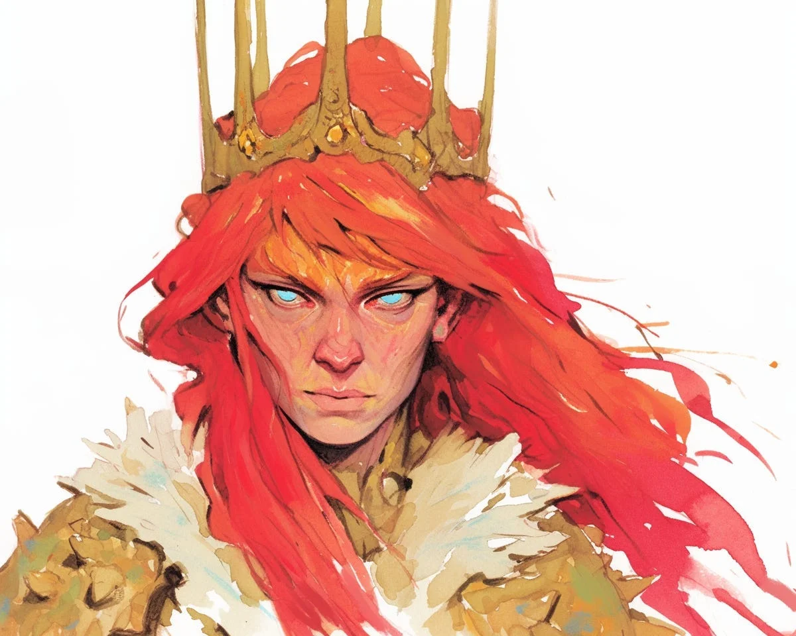

아샤가 브레넌 왕의 시체에서 왕관을 들어 올렸을 때 왕관이 비명을 질렀다—금속이 찢어지는 듯한 소리가 그녀의 두개골 안에서만 들렸다. 그 관은 사흘이 지난 지금도 여전히 부자연스러운 열기로 맥박치고 있었고, 사십 년간의 왕실의 분노로 자양분을 얻고 있었다.
[The crown shrieked when Asha lifted it from King Brennan’s corpse—a sound like metal tearing, audible only inside her skull. The circlet still pulsed with unnatural heat three days later, fed by forty years of royal rage.]
“폐하.” 세르 하드릭의 목소리는 갑옷이 돌에 긁히는 소리 같았다. “그레이폴 영지에서 또 사절단을 보냈습니다. 브레넌 왕이었다면 그런 주제넘은 짓에 채찍질을 명했을 겁니다.”
[“Your Majesty.” Ser Hadric’s voice scraped like armor against stone. “The Greyfall Territories sent another delegation. King Brennan would have had them whipped for the presumption.”]
그래, 왕관이 속삭였다. 연인의 부드러운 손길처럼 아샤의 이마에 자리 잡으며. 그들에게 힘을 보여줘.
[Yes, the crown whispered, settling onto Asha’s brow like a lover’s caress. Show them strength.]
사절단은 왕좌의 방에서 웅크리고 있었다—흙이 묻은 손톱을 가진 열두 명의 농부들과 아이들을 먼저 먹이느라 생긴 특유의 야윈 몸을 지닌 이들이었다. 그들의 대변인인 여자는 회색 머리카락이 땋은 머리에서 절망적으로 빠져나와 있었고, 앞으로 나섰다.
[The delegation huddled in the throne room—twelve farmers with dirt-caked fingernails and the particular thinness that comes from feeding children first. Their spokesman, a woman whose gray hair escaped her braid in desperate wisps, stepped forward.]
“수확세 말입니다, 폐하. 저희 아이들이—이번 달에만 여섯 명을 묻었습니다—”
[“The harvest tax, Your Majesty. Our children—we’ve buried six this month—”]
왕관의 열기가 타올랐다. 거짓말이야. 조작이지. 네 아버지였다면 그런 연극질에 조공을 두 배로 늘렸을 거야.
[The crown’s heat flared. Lies. Manipulation. Your father would have doubled their tribute for such theatrics.]
아샤는 자신의 손이 주먹으로 움켜쥐어지는 것을 느꼈다. 일어나서 의로운 분노가 수정을 통과하는 포도주처럼 자신을 관통하도록 내버려 두는 것이 얼마나 만족스러울까. 이 농민들이 자신들의 자리를 기억하는 것을 지켜보고, 그들의 마땅한 공포를 맛보는 것이—
[Asha felt her hands curl into fists. How satisfying it would be to rise, to let righteous fury pour through her like wine through crystal. To watch these peasants remember their place, to taste their proper terror—]
“세금을 반으로 줄이겠다.” 아샤가 이를 악물며 말했다.
[“The tax is halved,” Asha said through gritted teeth.]
왕관이 겨울 철처럼 차가워졌다. 열기가 너무 갑작스럽게 사라져서 아샤의 시야 가장자리가 회색빛으로 변했고, 성의 기초 어딘가에서 무언가가 금이 가기 시작했다.
[The crown went cold as winter iron. The heat vanished so suddenly that Asha’s vision grayed at the edges, and somewhere in the castle’s foundation, something began to crack.]
그 여자는 안도감에 울었다. 다른 농부들은 감사함에 무릎을 꿇었다. 하지만 그들 뒤에서 세르 하드릭의 손이 검 자루로 향했고, 높은 창문을 통해 아샤는 거미줄처럼 성의 외벽에 퍼져나가는 실금들을 볼 수 있었다.
[The woman wept with relief. The other farmers fell to their knees in gratitude. But behind them, Ser Hadric’s hand drifted to his sword hilt, and through the tall windows, Asha could see hairline fractures spreading across the castle’s outer walls like spiderwebs.]
바보야, 왕관이 쉿 소리를 냈다. 내 굶주림 없이는 왕국이 무너져. 말 그대로.
[Fool, the crown hissed. Without my hunger, the kingdom crumbles. Literally.]
그날 밤, 아샤는 느슨한 마루판 아래 숨겨진 브레넌의 일기를 발견했다. 이십 년간의 기록들이 왕관의 진짜 본성을 연대기로 기록하고 있었다: 왕관은 단순히 왕실의 분노를 먹고 사는 것이 아니라—그 분노를 왕국의 구조적 완전성으로 변환시키는 것이었다. 브레넌의 초기 항의는 마지못한 수용으로, 그다음엔 열성적인 협력으로 바뀌었다. 떨리는 손으로 쓴 마지막 기록: 사흘간 굶겨보려 했다. 북쪽 탑이 무너졌다. 스물일곱 명이 죽었다. 이제 이해한다—굶주린 것은 왕관이 아니었다. 왕국 자체가 우리의 분노를 먹고 살며, 그것 없이는 모든 것이 무너진다.
[That night, Asha found Brennan’s journal hidden beneath loose floorboards. Twenty years of entries chronicled the crown’s true nature: it didn’t just feed on royal rage—it converted that fury into the kingdom’s structural integrity. Brennan’s early protests gave way to grudging acceptance, then eager collaboration. The final entry, written with a shaking hand: Tried to starve it for three days. The north tower collapsed. Twenty-seven dead. I understand now—it was never the crown that was hungry. The kingdom itself feeds on our wrath, and without it, everything falls.]
아샤는 일기를 덮고 창가로 걸어갔다. 안뜰의 조약돌들이 휘기 시작했다. 멀리서 그레이폴 영지 사람들이 몇 달 만에 처음으로 취사용 불을 피우고 있었고, 아이들의 웃음소리가 바람에 실려 들려왔다.
[Asha closed the journal and walked to her window. The courtyard’s cobblestones had begun to buckle. In the distance, the Greyfall Territories were lighting cookfires for the first time in months, their children’s laughter carrying on the wind.]
아침이 되자 또 다른 성벽 구간이 무너져 있었다. 세르 하드릭은 폐허 속에서 아샤를 발견했는데, 그녀는 하얗게 질린 주먹으로 왕관을 꽉 쥐고 있었다.
[By morning, another section of wall had fallen. Ser Hadric found Asha in the ruins, the crown gleaming in her white-knuckled grip.]
“폐하,” 그가 조심스럽게 말했다. “동쪽 병영에 응력 균열이 나타나고 있습니다.”
[“Your Majesty,” he said carefully, “the eastern barracks are showing stress fractures.”]
아샤의 모습이 왕관의 황금빛 표면에 흔들리며 비쳤다—젊은 얼굴이 이미 익숙한 권위의 선으로 굳어지고 있었고, 눈에는 의로운 분노의 첫 번째 불꽃이 밝게 빛나고 있었다.
[Asha’s reflection wavered in the crown’s golden surface—young face already hardening into familiar lines of authority, eyes bright with the first sparks of righteous indignation.]
선택해, 왕관이 속삭였다. 그들의 목숨이냐 그들의 자유냐. 둘 다 가질 수는 없어.
[Choose, the crown whispered. Their lives or their freedom. You cannot have both.]
영지에서 들려오던 웃음소리가 멈췄다.
[The laughter from the territories had stopped.]